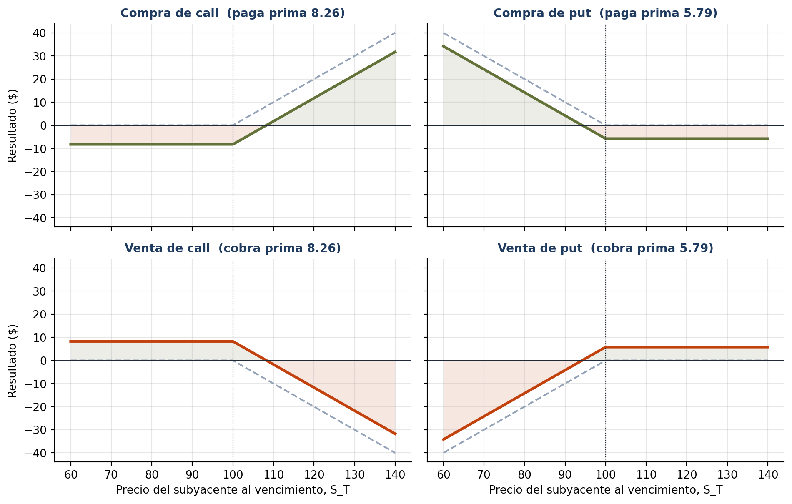
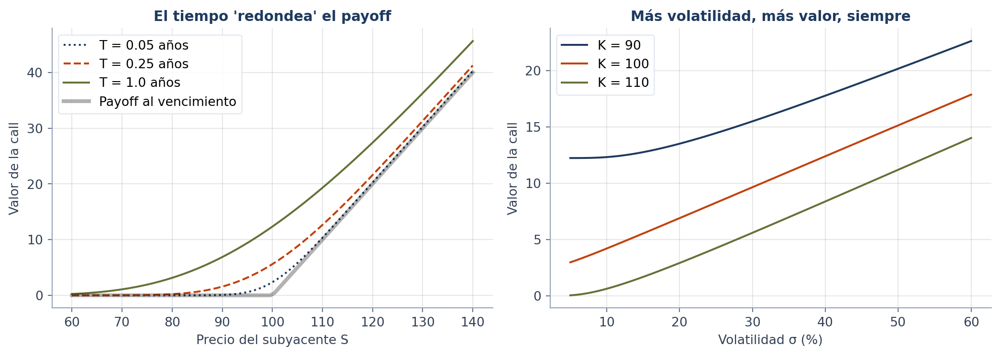
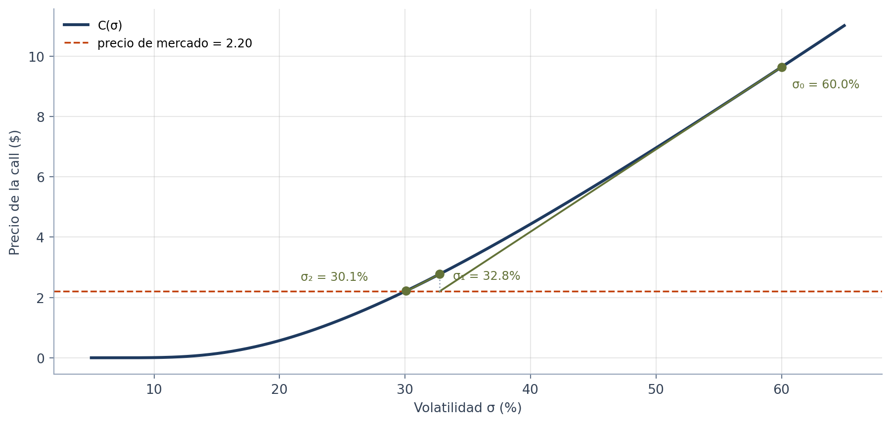
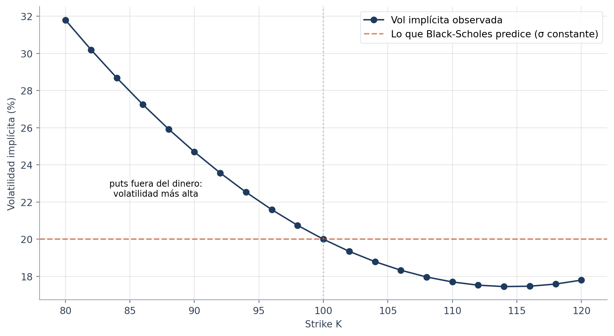
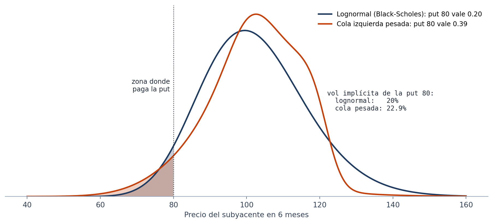
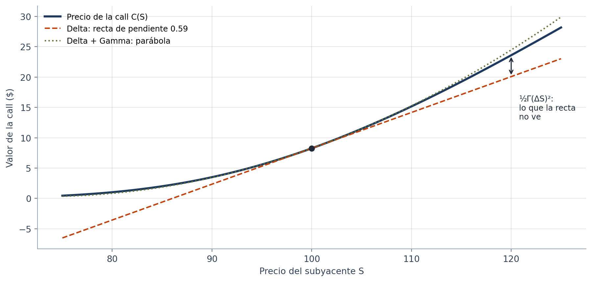
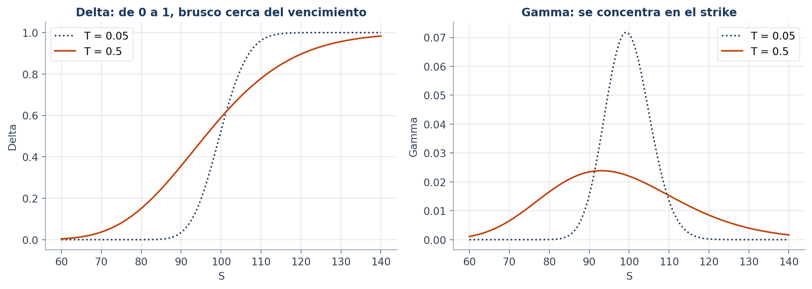

18 Capítulo 18: Valuación de Opciones y Volatilidad Implícita
Black-Scholes, Newton-Raphson, la sonrisa y las griegas
Resumen
Las opciones son el laboratorio perfecto de las finanzas cuantitativas: juntan probabilidad, métodos numéricos y estructura de mercado en un solo instrumento. Implementamos la fórmula de Black-Scholes, invertimos el problema para extraer la volatilidad implícita con Newton-Raphson, descubrimos la sonrisa de volatilidad —la evidencia de que el mercado no le cree a Black-Scholes— y calculamos las griegas, los tableros de sensibilidad que gobiernan la gestión de un book de opciones.
Introducción
Una opción de compra (call) da el derecho —no la obligación— de comprar un activo a un precio pactado \(K\) (el strike) en una fecha futura \(T\). Una put, el derecho de vender. La pregunta que define al capítulo: ¿cuánto vale hoy ese derecho?
Antes de valuar, conviene tener a la vista qué paga cada contrato al vencimiento. La Figura 18.1 muestra las cuatro posiciones básicas: el comprador paga una prima hoy a cambio de un pago asimétrico; el vendedor cobra la prima y asume ese pago.
La respuesta tiene una historia célebre. En 1973, Fischer Black, Myron Scholes y Robert Merton demostraron que —bajo ciertos supuestos— el precio de una opción no depende de la expectativa de nadie sobre si el activo va a subir o bajar (Black y Scholes 1973; Merton 1973). Depende de algo más sutil: de que la opción se puede replicar comprando y vendiendo dinámicamente el activo subyacente. Y si dos cosas tienen los mismos flujos, deben valer lo mismo (no-arbitraje). De esa lógica sale una fórmula cerrada, la más famosa de las finanzas.
En este capítulo la implementamos, y enseguida la damos vuelta: en el mercado real, la fórmula no se usa para calcular precios (los precios se observan en pantalla) sino para traducirlos a un lenguaje común: la volatilidad implícita.
import numpy as np
import matplotlib.pyplot as plt
from scipy.stats import norm18.1 Un primer derivado: el forward
Antes de valuar una opción conviene valuar el derivado más simple, porque el argumento es el mismo y se ve completo en pocas líneas. Un forward es el compromiso de comprar un activo en una fecha futura \(T\) a un precio \(F\) que se fija hoy. A diferencia de la opción, obliga a las dos partes, y al momento de pactarlo no se paga nada.
¿Cuál es el precio \(F\) razonable? La respuesta no depende de lo que se espere que haga el activo. Quien vende el forward puede cubrirse por completo desde el primer día: pide prestado \(S_0\), compra el activo y lo guarda hasta el vencimiento. En \(T\) entrega el activo, cobra \(F\) y devuelve el préstamo, que con una tasa continua \(r\) asciende a \(S_0 e^{rT}\). Si \(F\) fuera mayor que esa deuda, la operación dejaría una ganancia segura sin capital propio; si fuera menor, la ganancia segura estaría en la operación inversa. El único precio que no permite ninguna de las dos es
\[F = S_0\, e^{(r - q)T}\]
donde \(q\) es el rendimiento que el activo paga mientras se lo tiene en cartera, por ejemplo dividendos; quien lo guarda los cobra, y por eso abaratan el forward (Hull 2018). La diferencia \(r - q\) se conoce como costo de acarreo (cost of carry).
import numpy as np
def precio_forward(spot, tasa, plazo, q=0.0):
"""Precio forward por no arbitraje, con tasas continuas. q: rendimiento por dividendos."""
return spot * np.exp((tasa - q) * plazo)
spot, tasa, plazo = 100, 0.05, 0.5
print(f"Forward a 6 meses, sin dividendos: {precio_forward(spot, tasa, plazo):.2f}")
print(f"Forward a 6 meses, con dividendos de 2%: {precio_forward(spot, tasa, plazo, q=0.02):.2f}")
# Si el mercado cotiza el forward a 104, el vendedor cubierto gana sin riesgo
forward_mercado = 104.0
deuda = spot * np.exp(tasa * plazo)
print(f"\nForward de mercado: {forward_mercado:.2f}")
print(f" Hoy: pido prestado {spot}, compro el activo y vendo el forward. Flujo neto: 0")
print(f" En T: entrego el activo, cobro {forward_mercado:.2f} y devuelvo {deuda:.2f}")
print(f" Ganancia sin riesgo: {forward_mercado - deuda:.2f}")
# La misma fórmula, leída al revés: la tasa implícita en el precio de mercado
tasa_implicita = np.log(forward_mercado / spot) / plazo
print(f"\nTasa implícita en un forward a {forward_mercado:.0f}: {tasa_implicita:.2%}")Forward a 6 meses, sin dividendos: 102.53
Forward a 6 meses, con dividendos de 2%: 101.51
Forward de mercado: 104.00
Hoy: pido prestado 100, compro el activo y vendo el forward. Flujo neto: 0
En T: entrego el activo, cobro 104.00 y devuelvo 102.53
Ganancia sin riesgo: 1.47
Tasa implícita en un forward a 104: 7.84%El precio sin arbitraje es 102.53. Un forward a 104 permite ganar 1.47 por unidad sin poner capital ni correr riesgo, y esa operación (cash and carry) es la que, repetida por muchos participantes, empuja el precio de mercado hacia el teórico.
La última línea del código anticipa una idea que va a ocupar buena parte del capítulo. La fórmula sirve para calcular un precio a partir de una tasa, pero también para lo contrario: dado un precio de mercado, despejar la tasa que lo justifica. Un forward a 104 equivale a una tasa de 7.84% anual. Es la lectura habitual de los futuros de dólar que se negocian en el mercado local, cuya cotización se suele resumir en una tasa implícita. Con las opciones haremos lo mismo, con la volatilidad en el lugar de la tasa.
NotaForward y futuro
Un futuro es un forward estandarizado que se negocia en un mercado organizado. La diferencia práctica es la liquidación diaria: las ganancias y las pérdidas se acreditan y se debitan todos los días contra las garantías depositadas, en lugar de acumularse hasta el vencimiento. Eso elimina casi por completo el riesgo de que la contraparte no cumpla. Si la tasa de interés es conocida de antemano, el precio de un futuro y el de un forward coinciden.
Dos ideas de esta sección reaparecen en lo que sigue. El precio de un derivado se obtuvo sin ninguna opinión sobre el futuro del activo, solo construyendo una cartera que lo replica. Y el retorno esperado del activo no aparece en la fórmula: lo que aparece es la tasa libre de riesgo. Black-Scholes aplica el mismo argumento a un contrato cuyo pago no es lineal, y por eso la cartera que lo replica hay que ajustarla todo el tiempo.
18.2 La fórmula de Black-Scholes
Para una call europea sobre un activo que sigue un GBM (Capítulo 13) con volatilidad \(\sigma\), con tasa libre de riesgo \(r\):
\[C = S_0\, N(d_1) - K e^{-rT} N(d_2)\]
\[d_1 = \frac{\ln(S_0/K) + (r + \sigma^2/2)\,T}{\sigma\sqrt{T}}, \qquad d_2 = d_1 - \sigma\sqrt{T}\]
donde \(N(\cdot)\) es la función de distribución normal estándar. La fórmula tiene una lectura económica directa que ayuda a memorizarla: es lo que recibís menos lo que pagás, ponderado por probabilidades (en el mundo neutral al riesgo): \(N(d_2)\) es la probabilidad de ejercer, \(K e^{-rT} N(d_2)\) el valor presente esperado de lo que pagás si ejercés, y \(S_0 N(d_1)\) el valor esperado de lo que recibís.
def bs_call(S, K, T, r, sigma):
"""Precio Black-Scholes de una call europea."""
d1 = (np.log(S / K) + (r + 0.5 * sigma**2) * T) / (sigma * np.sqrt(T))
d2 = d1 - sigma * np.sqrt(T)
return S * norm.cdf(d1) - K * np.exp(-r * T) * norm.cdf(d2)
def bs_put(S, K, T, r, sigma):
"""Precio Black-Scholes de una put europea."""
d1 = (np.log(S / K) + (r + 0.5 * sigma**2) * T) / (sigma * np.sqrt(T))
d2 = d1 - sigma * np.sqrt(T)
return K * np.exp(-r * T) * norm.cdf(-d2) - S * norm.cdf(-d1)
# Un contrato concreto: call al dinero, 6 meses, vol 25%
S, K, T, r, sigma = 100, 100, 0.5, 0.05, 0.25
precio_call = bs_call(S, K, T, r, sigma)
precio_put = bs_put(S, K, T, r, sigma)
print(f"Call: ${precio_call:.4f}")
print(f"Put: ${precio_put:.4f}")
print(f"\nVerificación de paridad put-call:")
print(f" C - P = {precio_call - precio_put:.4f}")
print(f" S - K·e^(-rT) = {S - K * np.exp(-r * T):.4f}")Call: $8.2600
Put: $5.7910
Verificación de paridad put-call:
C - P = 2.4690
S - K·e^(-rT) = 2.4690La paridad put-call (\(C - P = S - Ke^{-rT}\)) que verificamos al final no depende de Black-Scholes ni de ningún modelo: sale de puro no-arbitraje. Su lado derecho es el valor de un forward con precio de entrega \(K\): comprar la call y vender la put replica ese forward. Por eso es el primer chequeo de cordura de cualquier implementación: si tu código la viola, está mal.
NotaLos supuestos que después importarán
Black-Scholes supone: volatilidad \(\sigma\) constante y conocida, trayectorias continuas (sin saltos; ya sabemos por el Capítulo 14 que es falso), tasa constante, sin costos de transacción y posibilidad de operar continuamente. Cada supuesto se viola en la realidad, y la genialidad práctica del mercado fue inventar una forma de medir esas violaciones: la sonrisa de volatilidad que veremos enseguida.
18.2.1 ¿Qué mueve el precio de una opción?
Antes de invertir la fórmula, desarrollemos intuición sobre cómo responde el precio a sus inputs:
S_grid = np.linspace(60, 140, 100)
fig, axes = plt.subplots(1, 2, figsize=(11, 4))
# Panel 1: valor de la call vs precio del subyacente, a distintos plazos
ax = axes[0]
for T_i, estilo in [(0.05, ":"), (0.25, "--"), (1.0, "-")]:
ax.plot(S_grid, bs_call(S_grid, K, T_i, r, sigma), estilo,
label=f"T = {T_i} años")
ax.plot(S_grid, np.maximum(S_grid - K, 0), "k-", alpha=0.3, linewidth=3,
label="Payoff al vencimiento")
ax.set_xlabel("Precio del subyacente S")
ax.set_ylabel("Valor de la call")
ax.set_title("El tiempo 'redondea' el payoff")
ax.legend()
ax.grid(True, alpha=0.3)
# Panel 2: valor vs volatilidad
ax = axes[1]
vol_grid = np.linspace(0.05, 0.60, 100)
for K_i in [90, 100, 110]:
ax.plot(vol_grid * 100, bs_call(S, K_i, T, r, vol_grid), label=f"K = {K_i}")
ax.set_xlabel("Volatilidad σ (%)")
ax.set_ylabel("Valor de la call")
ax.set_title("Más volatilidad, más valor, siempre")
ax.legend()
ax.grid(True, alpha=0.3)
plt.tight_layout()
plt.show()
El panel derecho de la Figura 18.2 contiene la clave de todo el capítulo: el precio de una opción crece monótonamente con la volatilidad. Tiene sentido económico: la opción te protege de la baja (perdés como mucho la prima) y te deja toda la suba, de modo que más dispersión solo puede favorecerte. Esa monotonía significa que la relación precio ↔︎ volatilidad es uno a uno: dado un precio, existe una única \(\sigma\) que lo genera. Podemos invertir la fórmula.
18.3 Volatilidad implícita: leer la fórmula al revés
En el mercado, el precio de la opción se observa: lo pone la oferta y la demanda. De los cinco inputs de Black-Scholes, cuatro son observables (\(S\), \(K\), \(T\), \(r\)). El único invisible es \(\sigma\). Entonces el uso real de la fórmula es el inverso: ¿qué volatilidad está “implicando” este precio de mercado?
\[\sigma_{impl} : \quad C_{BS}(S, K, T, r, \sigma_{impl}) = C_{mercado}\]
La Figura 18.3 muestra los dos usos de la misma fórmula: de ida, para valuar; de vuelta, para traducir precios observados a volatilidad.
flowchart LR
subgraph IDA["Ida: valuar"]
direction LR
A1["S, K, T, r"] --> B1[["Black-Scholes"]]
V1["σ<br/><i>supuesta</i>"] --> B1
B1 --> P1(["precio teórico"])
end
subgraph VUELTA["Vuelta: leer el mercado"]
direction LR
A2["S, K, T, r"] --> N2[["Newton-Raphson<br/><i>invierte Black-Scholes</i>"]]
P2["precio<br/><i>observado</i>"] --> N2
N2 --> V2(["σ implícita"])
end
classDef dato fill:#e0e9f4,stroke:#1e3a5f,color:#1f2937
classDef clave fill:#fde8dc,stroke:#c2410c,color:#1f2937
classDef fin fill:#eef2e3,stroke:#637238,color:#1f2937
class A1,A2 dato
class V1,P2 clave
class P1,V2 fin
No hay fórmula cerrada para despejar \(\sigma\); hay que resolver numéricamente. El método clásico es Newton-Raphson: arrancar de un \(\sigma\) tentativo y corregirlo usando la pendiente de la función,
\[\sigma_{n+1} = \sigma_n - \frac{C_{BS}(\sigma_n) - C_{mercado}}{\partial C / \partial \sigma}\]
donde la derivada del denominador tiene nombre propio —vega— y fórmula cerrada. Cada iteración pregunta: “¿me pasé o me quedé corto? ¿y cuán sensible es el precio acá?” y da un paso proporcional al error.
def vega(S, K, T, r, sigma):
"""Vega: derivada del precio respecto de la volatilidad."""
d1 = (np.log(S / K) + (r + 0.5 * sigma**2) * T) / (sigma * np.sqrt(T))
return S * np.sqrt(T) * norm.pdf(d1)
def implied_vol(precio_mercado, S, K, T, r, sigma0=0.3, tol=1e-8, max_iter=100):
"""Volatilidad implícita de una call por Newton-Raphson."""
sigma = sigma0
for _ in range(max_iter):
diff = bs_call(S, K, T, r, sigma) - precio_mercado
if abs(diff) < tol:
return sigma
v = vega(S, K, T, r, sigma)
if v < 1e-12: # vega ~0: Newton se queda sin pendiente
raise RuntimeError("Vega demasiado chica; usar bisección/brentq")
sigma -= diff / v
raise RuntimeError("No convergió")
# Test de ida y vuelta: precio generado con σ=30% → ¿recuperamos 30%?
precio_test = bs_call(100, 100, 0.5, 0.05, 0.30)
vol_recuperada = implied_vol(precio_test, 100, 100, 0.5, 0.05)
print(f"σ original: 30.00% → σ recuperada: {vol_recuperada:.4%}")σ original: 30.00% → σ recuperada: 30.0000%La Figura 18.4 muestra por qué Newton converge tan rápido. Cada paso reemplaza la curva por su recta tangente (cuya pendiente es el vega) y salta al punto donde esa recta alcanza el precio de mercado.

Newton converge en un puñado de iteraciones porque el precio es suave y monótono en \(\sigma\). La volatilidad implícita es el idioma en que se cotizan las opciones: los operadores no dicen “la call vale $8.26”, dicen “está en 30 de vol”, un número comparable entre strikes, plazos y subyacentes.
18.4 La sonrisa de volatilidad
Si Black-Scholes fuera literalmente cierto, la volatilidad implícita sería la misma para todos los strikes, porque es un parámetro del activo y no del contrato. En el mercado no ocurre eso. Para verlo generamos precios con la forma que se observa habitualmente en un índice accionario y les aplicamos implied_vol, que es el procedimiento que se usa con precios reales:
strikes = np.arange(80, 121, 2)
S, T, r = 100, 0.5, 0.05
# Precios sintéticos con la forma típica de un índice: la volatilidad baja
# a medida que sube el strike, y se aplana en los strikes altos
vols_mercado = 0.20 - 0.0035 * (strikes - 100) + 0.00012 * (strikes - 100) ** 2
precios_mkt = [bs_call(S, K_i, T, r, v) for K_i, v in zip(strikes, vols_mercado)]
# Recuperamos la vol implícita de cada precio (así se construye el gráfico real)
vols_impl = [implied_vol(p, S, K_i, T, r) for p, K_i in zip(precios_mkt, strikes)]
fig, ax = plt.subplots(figsize=(9, 5))
ax.plot(strikes, np.array(vols_impl) * 100, "o-", color="#1e3a5f",
label="Vol implícita observada")
ax.axhline(20, color="#c2410c", linestyle="--", alpha=0.6,
label="Lo que Black-Scholes predice (σ constante)")
ax.axvline(100, color="#94a3b8", linestyle=":", alpha=0.5)
ax.annotate("puts fuera del dinero:\nvolatilidad más alta", xy=(87, 22.3), fontsize=9, ha="center")
ax.set_xlabel("Strike K")
ax.set_ylabel("Volatilidad implícita (%)")
ax.legend()
ax.grid(True, alpha=0.3)
plt.tight_layout()
plt.show()
La curva de la Figura 18.5 no es plana. La volatilidad implícita es más alta en los strikes bajos, cae a medida que el strike sube y recién se estabiliza bastante por encima del precio actual. Cuando la curva es aproximadamente simétrica se la llama sonrisa, y es lo habitual en monedas. La forma inclinada de la figura, típica de acciones e índices, se conoce como smirk o skew. En los dos casos el mercado está diciendo lo mismo:
- Las colas existen: los compradores pagan más (en vol) por las opciones que pagan en escenarios extremos, porque saben —desde el crash de 1987, cuando nació la sonrisa— que esos escenarios son más probables de lo que la normal admite. Es la curtosis del Capítulo 14 cotizada en pantalla.
- La asimetría también: la rama izquierda más cara refleja que los derrumbes son más violentos que los rallies, y que hay demanda estructural de protección (puts como seguro).
La Figura 18.6 muestra la cadena completa con una put fuera del dinero. Si el mercado cree en una distribución con la cola izquierda más pesada que la lognormal de Black-Scholes, esa put vale más; y la única forma de que Black-Scholes reproduzca ese precio más alto es con una volatilidad más alta.

ImportanteLa sonrisa es el puente del libro
Todo converge acá: los retornos tienen colas pesadas y asimetría (Cap. 7), los modelos con saltos las generan (Cap. 14), y la sonrisa es el mercado poniéndoles precio. Black-Scholes no está “mal”: es la vara con la que el mercado mide sus propias desviaciones de la normalidad. Los modelos que reproducen la sonrisa (Heston, SABR) son el tema del Capítulo 20.
18.5 Las griegas: el tablero de control
Quien tiene una posición en opciones necesita saber cómo cambia su valor cuando se mueve el mundo. Las griegas son esas derivadas parciales:
| Griega | Derivada | Pregunta que responde |
|---|---|---|
| Delta (\(\Delta\)) | \(\partial C/\partial S\) | ¿Cuánto gano si el subyacente sube $1? |
| Gamma (\(\Gamma\)) | \(\partial^2 C/\partial S^2\) | ¿Cuán rápido cambia mi delta? (curvatura) |
| Vega | \(\partial C/\partial \sigma\) | ¿Cuánto gano si la vol sube 1 punto? |
| Theta (\(\Theta\)) | \(\partial C/\partial t\) | ¿Cuánto pierdo por el paso de un día? |
Para Black-Scholes existen fórmulas cerradas (delta de una call = \(N(d_1)\)), pero conviene dominar el método general de diferencias finitas —perturbar el input, repreciar, dividir— porque funciona con cualquier modelo de pricing, tenga fórmula o sea un Monte Carlo:
\[\Delta \approx \frac{C(S + h) - C(S - h)}{2h}\]
def griegas_call(S, K, T, r, sigma, dS=0.01, dsig=0.0001, dT=1/365):
"""Griegas de una call por diferencias finitas centradas."""
delta = (bs_call(S + dS, K, T, r, sigma) - bs_call(S - dS, K, T, r, sigma)) / (2 * dS)
gamma = (bs_call(S + dS, K, T, r, sigma) - 2 * bs_call(S, K, T, r, sigma)
+ bs_call(S - dS, K, T, r, sigma)) / dS**2
vega_ = (bs_call(S, K, T, r, sigma + dsig) - bs_call(S, K, T, r, sigma - dsig)) / (2 * dsig)
theta = (bs_call(S, K, T - dT, r, sigma) - bs_call(S, K, T, r, sigma)) / dT
return {"Delta": delta, "Gamma": gamma, "Vega": vega_, "Theta (anual)": theta}
g = griegas_call(100, 100, 0.5, 0.05, 0.25)
for nombre, valor in g.items():
print(f" {nombre:>14}: {valor:>+10.4f}")
# Verificación contra la fórmula cerrada del delta
d1 = (np.log(100/100) + (0.05 + 0.5 * 0.25**2) * 0.5) / (0.25 * np.sqrt(0.5))
print(f"\n Delta analítico N(d1) = {norm.cdf(d1):+.4f} (coincide ✓)") Delta: +0.5909
Gamma: +0.0220
Vega: +27.4743
Theta (anual): -9.4199
Delta analítico N(d1) = +0.5909 (coincide ✓)Interpretá los números: delta ≈ 0.59 (la call al dinero se mueve ~59 centavos por cada dólar del subyacente), gamma positivo (ese delta crece si el activo sube; es la convexidad que hace valiosas a las opciones), vega positivo (la opción es una posición comprada en volatilidad) y theta negativo (cada día que pasa, el derecho vale menos: el tiempo es el alquiler que paga el comprador).
Delta y gamma tienen una lectura geométrica directa, y la Figura 18.7 la muestra: el delta es la pendiente de la curva de precio en el punto actual; el gamma, su curvatura. La recta del delta alcanza para movimientos chicos; para movimientos grandes, hace falta la parábola que agrega el gamma.

S_grid = np.linspace(60, 140, 120)
fig, axes = plt.subplots(1, 2, figsize=(11, 4))
ax = axes[0]
for T_i, estilo in [(0.05, ":"), (0.5, "-")]:
deltas = [griegas_call(s, 100, T_i, 0.05, 0.25)["Delta"] for s in S_grid]
ax.plot(S_grid, deltas, estilo, label=f"T = {T_i}")
ax.set_xlabel("S")
ax.set_ylabel("Delta")
ax.set_title("Delta: de 0 a 1, brusco cerca del vencimiento")
ax.legend()
ax.grid(True, alpha=0.3)
ax = axes[1]
for T_i, estilo in [(0.05, ":"), (0.5, "-")]:
gammas = [griegas_call(s, 100, T_i, 0.05, 0.25)["Gamma"] for s in S_grid]
ax.plot(S_grid, gammas, estilo, label=f"T = {T_i}")
ax.set_xlabel("S")
ax.set_ylabel("Gamma")
ax.set_title("Gamma: se concentra en el strike")
ax.legend()
ax.grid(True, alpha=0.3)
plt.tight_layout()
plt.show()
El gamma de la Figura 18.8, concentrado alrededor del strike y cada vez más puntiagudo al acercarse el vencimiento, es el protagonista del próximo capítulo: es lo que hace que cubrir una opción cerca del vencimiento y cerca del strike sea tan difícil.
Simulador · Tablero de Black-Scholes
Todos los inputs de la fórmula, a la vez. El gráfico grande junta la Figura 18.2 y la Figura 18.7: la curva azul es el valor de la opción hoy, la gris su payoff al vencimiento, y alrededor del precio actual están la recta del delta y la parábola que agrega el gamma. Abajo, los perfiles de la Figura 18.8. Arranca con el contrato del capítulo.
18.6 Errores comunes
AdvertenciaTrampas frecuentes
- Valuar un forward con el retorno esperado del activo: el precio sale de la tasa libre de riesgo y de los dividendos, no de lo que se espera que el activo suba. Lo mismo vale para las opciones.
- Unidades del theta: la derivada es “por año”; dividí por 365 para el decaimiento diario que se reporta en las pantallas.
- Newton sin red: lejos del dinero, el vega es casi cero y Newton-Raphson diverge. Para uso robusto, combiná con bisección (
scipy.optimize.brentq) que garantiza convergencia. - Volatilidad en las unidades equivocadas: \(\sigma\) = 0.25, no 25. Un factor 100 en la vol produce precios absurdos silenciosamente.
- Aplicar Black-Scholes a opciones americanas: la fórmula es para ejercicio europeo (solo al vencimiento). Para americanas con dividendos, el ejercicio temprano vale y se necesitan árboles o métodos numéricos.
- Paso de diferencias finitas mal elegido: \(h\) demasiado grande sesga; demasiado chico amplifica el error de redondeo. Los valores del código (dS=0.01) son un buen punto medio para este problema.